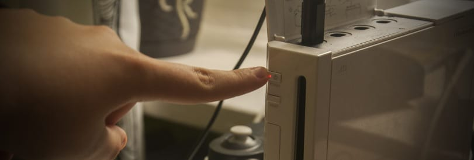

Priiloader
Se hai bisogno di qualsiasi informazione riguardante questo tutorial, entra nel server discord di RiiConnect24 (raccomandato) oppure scrivici una mail a [email protected].
PriiLoader aggiunge un livello di protezione da brick alla tua Wii. Si carica prima del menù Wii (da li il nome). Lo strumento può anche abilitare hack per il tuo Menù Wii, e può essere usato facilmente dal Canale Homebrew, BootMii, o qualsiasi altra app homebrew!

Ti preghiamo di non installare Priiloader su una Virtual Wii (modalità Wii su Wii U). Briccerai la tua Virtual Wii facendolo.
Di cosa hai bisogno
- Una scheda SD o chiavetta USB
- Priiloader installer
Istruzioni
Sezione 1 - Scaricare/Installare
- Scarica l’installer di Priiloader ed estrailo sulla radice della tua scheda SD o unità USB.
Sezione 2 - Installare Priiloader
- Carica il Canale Homebrew sulla tua Wii.
- Avvia il Priiloader installer.
- Premi il pulsante + sul Wii Remote o il pulsante A su un controller GameCube.


Sezione 3 - Entrare/Configurare Priiloader
- Tieni premuto il tasto RESET mentre stai avviando la tua Wii.
- Se stai usando una Wii mini, collega una tastiera USB e premi premuto ESC mentre la stai avviando.
 
- Dovresti essere nel menu Priiloader.

- Vai su
System Menu Hacks.
Se stai utilizzando un’unità USB per installare Priiloader, assicurarsi di non avere una scheda SD inserita allo stesso tempo. In questo modo Priiloader non sarà in grado di trovare il file hacks_hash.ini.
- Consigliamo di attivare ognuna dei seguenti hack:
Region Free EVERYTHING,Block Disc UpdateseBlock Online Updates.
- Vai giù e seleziona
Save settingse premi A, poi premi B per tornare indietro nel menu principale di Priiloader. - Vai giù e seleziona
Homebrew Channele premi A per avviarlo.
Lista dei System Menu Hacks
Questa è una lista di hack che puoi attivare con Priiloader.
| Hack | Descrizione |
|---|---|
| Block Disc Updates | Rimuove lo schemo “Aggiornamente sistema Wii” incluso in alcuni giochi che ti constringe ad aggiornare la console per giocarci. |
| Block Online Updates | Disabilita gli aggiornamenti della tua Wii. Ogni aggiornamento fallirà con errore 32007. |
| Auto-Press A at Health Screen | Preme automaticamente il pulsante A per saltare la schermata di “Salute e Sicurezza”. |
| Replace Health Screen with Backmenu | Cambia la schermata di “Salute e Sicurezza” nell’animazione quando si ritorna al menu Wii. |
| Move Disc Channel | Ti permette dii spostare il Canale Disco dove vuoi nel Menu Wii. Normalmente è bloccato in alto a sinistra nella prima pagina. |
| Wiimmfi Patch v4 | Patcha automaticamente tutti i giochi che avvi dal Canale Disco per essere usati con Wiimmfi. |
| 480p graphics fix in system menu | Risolve un piccolo problema con la definizione in 480p nel Menu Wii. |
| Remove NoCopy Save File Protection | Consente di copiare i file di salvataggio normalmente non consentiti sulla scheda SD dalla gestione dei dati |
| Region Free EVERYTHING | Disabilita i blocchi regionali per ogni applicazione Wii, anche quelli scaricati. |
| Region Free GC Games (No VM Patch) | Disabilita i blocchi regionali per i dischi GameCube. |
| Region Free Wii Games | Disabilita i blocchi regionali per i dischi Wii. |
| Region Free Channels | Disabilita il blocco regione per i canali installati. |
| No System Menu Sounds AT ALL | Disabilita tutti gli effetti sonori nel Menu Wii. |
| No System Menu Background Music | Disabilita la musica di sottofondo nel Menu Wii. |
| Re-Enable Bannerbomb v2 | Abilita l’exploit “Bannerbomb” nella versione più recente della Wii. Non è necessario se l’Homebrew Channel è già installato. |
| OSReport to UsbGecko(slot B) | Invia i log del Menu Wii ad un dispositivo di debugging nello slot delle memory card B. |
| OSReport to UsbGecko(GeckoOS,B) | Invia i log del Menu Wii ad un dispositivo di debugging nello slot delle memory card B, se il Menu Wii è avviato da Gecko OS. |
| Force Standard Recovery Mode | Avvia la console in modalità di recupero automaticamente. Viene usato per avviare dischi di recupero, permettendo agli utenti di unbrickare le loro Wii. |
| Remove Diagnostic Disc Check | Rimuove un controllo nella Wii per vedere se il gioco inserito corrisponde all’ID del “Disco Di Avvio Wii”. |
| Lock System Menu with Black Screen | Fa avviare il menu Wii con una schermata nera, rendendo impossibile utilizzarlo. (Non abilitare questa opzione) |
| No-Delete HAXX,JODI,DVDX,DISC,DISK,RZDx | Re-abilita l’utilizzo di canali con questi title ID (normalmente bloccati negli aggiornamenti della console per essere degli exploits). |
| Force Disc Games to run under IOS249 | Imposta il cIOS 249 come l’IOS del gioco avviato da un disco. Mentre questo non può abilitare giocare a giochi masterizzati in casa, è necessario per giocare dischi masterizzati. (Può darti l’errore 002 su un gioco non masterizzato) |
Continua con le cose da fare e cose da non fare nel modding Wii
Queste sono alcune linee guida per assicurarti di non brickare il Wii.